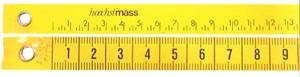
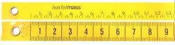

Mundo del zapato
CÓMO SE HACE UN ZAPATO, Qué conocemos como un buen zapato? Cómo se hace un zapato? Las herramientas del zapatero El manual del zapato LAS MEDIDAS Y EL PIE Toma de Medidas El pie: Contorno, longitud, anchura y volumen El pie: Huella y perspectiva El puente y las malformaciones más frecuentes Sistema óseo y musculatura del pie Numeración del ancho La documentación del pie Numeración del calzado (francesa, inglesa, americana y métrica) LA HORMA Para qué sirven las hormas Zapatero a tus zapatos Las hormas simétricas y asimétricas Elaboración manual y preparación mecánica de una horma a medida Copia preliminar, definitiva y últimos toques de una horma El material de la horma Hormas a medida (método de sustracción adición y hormas corregidas) Características de las hormas, prueba y duración TIPOS DE ZAPATOS El zapato a medida El zapato hace a la persona Moda en los pies Oxford Full-Brogue y semi-Brogue Blucher Los zapatos de verano El zapato formal de cordones y costura presuina El zapato formal de cordones y costura inglesa Los mocasines Mocasines a la italiana Monkstrap: El zapato con hebilla Los bicolores - clásico americano Sinónimo de impermeable Clásicos De Golf Botas * La bota - Su historia (Lic. Richard Danta) * Las Botas y su decoración: el siglo XlX (Lic. Richard Danta) * Las Botas y su decoración: el siglo XX (Lic. Richard Danta) * Una historia de la bota vaquera D. W. Frommer II x Traducción al Español: Licenciado Richard Danta El diseño LA PALA El corte Accesorios de la pala Preparativos para la unión de las piezas de la pala El festoneado La perforación (brogueing) Decoraciones sobre la puntera Refuerzos en la pala El aparado de la pala Retoques finales CUEROS Y PIELES La piel de la pala Cuero limpio El curtido Recurtido El curtido vegetal Boxcalf Piel bovina Pieles exóticas Cordobán Gama de colores y combinaciones de colores y piel La piel de la suela El forro de refuerzo El forro de la pala LOS ZAPATEROS El taller de zapatería Los gremios de los zapateros La industrialización y sus consecuencias FABRICACION Y ARMADO DEL ZAPATO El montado del zapato El zapato de vira cosida El zapato de cosido doble Las piezas inferiores y el corte La palmilla Preparación de la pala Contrafuerte del talón El engrudo El tensado El amartillado del zapato El cabo del zapatero El complemento de la vira: el revirón Aplicación de la suela La suela exterior y el marcado de los puntos La costura de la entresuela y de la suela exterior El tacón El parce de goma Pulido de la suela y del tacón Ornamentos de la suela y del tacón El deshormaje Últimos retoques en el interior del zapato Plantillas Hormas extendedoras, extendedores de tres piezas y con muelle El pulido final del zapato Cordones adecuados * Diseño artesanal de un mocasín indio * Sandalia artesanal EL CUIDADO DEL ZAPATO La limpieza del zapato Diez reglas para el cuidado del zapato El arte de limpiar zapatos Tipos de hormas extendedoras El calzador Cuando el zapato aprieta... La reparación del calzado (reparación y sustitución de la media suela y el tacón)
Medidas y el pie
LA TOMA DE LAS MEDIDAS
No existen dos pies que sean exactamente iguales. Por este motivo, a un zapatero solamente le es posible confeccionar zapatos cómodos de las medidas correspondientes cuando dispone de toda la información necesario sobre los dos pies del cliente. En la confección de un traje a medida, el sastre recomienda por lo menos dos o tres pruebas, mientras que el zapatero se las arregla con sólo una gracias al denominado zapato de prueba. Para ello es absolutamente necesario destinar suficiente tiempo a la toma de medidas, a ser posible de una a dos horas. Es muy frecuente que resulte difícil encontrar el momento en que puede conseguirse el resultado más preciso. En condiciones normales, el tamaño que tiene el pie de un hombre saludable es constante a lo largo del día. Sin embargo, puede sufrir cambios causados por la temperatura (por ejemplo, si hace un calor considerable) o por el esfuerzo que haya realizado durante el transcurso del día (haber caminado o practicado deporte durante horas). Por esta razón, las horas más recomendables para realizar la toma de medidas del pie son las de la mañana. Además algunas enfermedades provocan la hinchazón de los pies. Si el tratamiento debe terminar en un período previsible de tiempo, después del cual los pies recuperarán su forma original, el cliente debería esperar hasta ese momento para llevar a cabo la toma de medidas. En cambio, si se trata de una enfermedad crónica, los zapatos agrandados pueden aliviar el caminar del cliente. En caso de malformaciones, como por ejemplo dedos en martillo o callosidades en los laterales, el zapatero afronta la confección de los zapatos de acuerdo con cada caso que se le presente. Sin embargo, es recomendable someterse a una pequeña operación ortopédica y a continuación encargar unos cómodos zapatos a medida. En cualquier caso, es interesante asistir a una podóloga antes de la toma de las medidas para evitar molestias tales como uñeros, matrices hinchadas o dolorosos ojos de gallo. También es recomendable llevar medias finos para que las medidas resulten lo más exactas posibles. La toma de medidas para confeccionar unos zapatos es una especie de ceremonia en la que el momento correcto, la duración, las eventuales molestias y toda la información que se pueda obtener sobre el cliente son de suma importancia. Las maniobras del zapatero siguen, por decirlo de algún modo, un ritual y un orden establecido. Dicha ceremonia se convierte en requisito básico para la construcción de una horma que sustituirá al pie con la máxima perfección durante la confección del zapato y que permitirá al zapatero crear una auténtica obra de arte. El zapatero toma las medidas de la longitud, la anchura, la altura y el contorno del pie desde dos posiciones distintas: en primer lugar, mientras el pie aguanta el peso del cuero y, posteriormente, en estado relajado. Cuando la persona está de pie, la anchura del pie puede registrar una diferencia de casi un centímetro respecto a la posición sedente; además, el arco disminuye y los nervios y los músculos se tensan. Dicha posición refleja aproximadamente el estado en que se encuentra el pie cuando camina soportando una fuerte carga. De manera inevitable, el zapato se ensancha al caminar, asó como también a consecuencia del calor y de la humedad que produce el pie. Si el zapatero asumiera que las medidas de la posición de carga son las "reales", la alegría del cliente (los zapatos resultarían comodísimos desde el primer momento) se transformaría en decepción al transcurrir unos días: los zapatos se ensancharían demasiado y los arrastraría. En las medidas que se toman mientras el cliente está sentado surge una imagen contraria: el pie es "más pequeño". A pesar de ello, un gran número de zapateros considera que dichas medidas son las más importantes, puesto que permiten calcular mejor la anchura cambiante del pie al caminar y la posible dilatación del zapato durante su utilización. La primera fase de la toma de medidas consiste en la inspección del pie para poder determinar su forma: siguiendo un eje longitudinal imaginario se comprueba si el pie tiende hacia el exterior o hacia el interior, si el arco interior longitudinal es pronunciado o no, la situación del tobillo, si el talón es débil o fuerte, cómo son los laterales y el empeine o si existen deformidades características como por ejemplo, pie plano, metatarso acentuado, quinto dedo prominente, dedos en martillo o pulgar saliente. para ello es necesario palpar con precisión la forma y el contorno del pie. El zapatero observa la forma de caminar del cliente, que puede estar considerablemente influida por el peso corporal o por hábitos inconscientes. Hay personas que pisan con ligereza y otras que andan pesadamente. Por todos estos motivos, el zapatero estudia también los zapatos viejos y sus malformaciones muy atentamente (cómo y hacia qué lado se decanta el zapato, en qué punto se han gastado la suela y el talón), puesto que pueden proporcionar importantes indicaciones para la confección del nuevo zapato. Finalmente, el zapatero habla con el cliente. En general, la mayoría de la gente no sabe cómo son sus pies, simplemente se queja de que "los zapatos le aprietan el pulgar", o de que "todos los zapatos son demasiado estrechos". De esta forma, surge información adicional importante para determinar el tamaño y la forma de los nuevos zapatos. Las personas que sufren diabetes o tienen mala circulación no pueden llevar zapatos estrechos, por lo que las medidas de su calzado deben ser algo más "holgadas".El pie: Contorno, longitud, anchura y volumen Contorno

 La cinta métrica del zapatero muestra dos escalas: una mide la longitud de pie en puntos París (una unidad son 6,66mm) y la otra la anchura y el volumen del pie con el sistema métrico, es decir, en centímetros y milímetros.

EL VOLUMEN DEL PIE:
Para medir el volumen se utiliza el lado de la cinta que muestra el sistema métrico. para la medición del ancho de los metatarsianos, el zapatero coloca la cinta en los puntos donde el lateral exterior y el interior sobresalen más. para ello coloca la cinta de forma algo oblicua por debajo de la planta. Unos 5 o 6 cm. más arriba, en dirección hacia el tobillo, mide el contorno del empeine. Seguidamente toma las medidas del talón. Para ello coloca la cinta sobre el hueso del tobillo y rodea el talón. para la confección de botas o botinas, el zapatero debe medir también el contorno del tobillo colocando la cinta alrededor de la pierna por debajo del maléolo.
La cinta métrica del zapatero muestra dos escalas: una mide la longitud de pie en puntos París (una unidad son 6,66mm) y la otra la anchura y el volumen del pie con el sistema métrico, es decir, en centímetros y milímetros.

EL VOLUMEN DEL PIE:
Para medir el volumen se utiliza el lado de la cinta que muestra el sistema métrico. para la medición del ancho de los metatarsianos, el zapatero coloca la cinta en los puntos donde el lateral exterior y el interior sobresalen más. para ello coloca la cinta de forma algo oblicua por debajo de la planta. Unos 5 o 6 cm. más arriba, en dirección hacia el tobillo, mide el contorno del empeine. Seguidamente toma las medidas del talón. Para ello coloca la cinta sobre el hueso del tobillo y rodea el talón. para la confección de botas o botinas, el zapatero debe medir también el contorno del tobillo colocando la cinta alrededor de la pierna por debajo del maléolo.
EL PIE: HUELLA Y PERPECTIVA
LA HUELLA: Tras realizar el dibujo del contorno, se toma la huella del pie con el pedígrafo, que transmite una imagen precisa del puente y refleja los puntos de cruce de los arcos y la situación de los dedos. Se pinta con tinta uno de los lados de una esterilla de goma de textura muy apretada. A continuación se coloca un papel sobre la superficie pintada. La toma de la huella se realiza en posición sentada, aunque se presiona ligeramente cada pie sobre el aparato. Cuando el peso del cuerpo se sitúa sobre la planta del pie, el color de la estera se transmite al papel; en los puntos donde se soporta más peso, el color se oscurece. Al confeccionar la horma, el hormero reproduce las manchas como ligeros abultamientos en la suela. Los arcos longitudinales y latitudinales perfectos apenas dejan huellas, pero si toda superficie de la suela está cubierta de color, ello indica una de las deformaciones más corrientes: el hundimiento del puente. Este tipo de hundimiento puede ser contrarrestado con el uso temprano de plantillas correctoras y con zapatos cómodos de buena confección. Por este motivo, para el zapatero es muy importante formarse una imagen precisa del estado del puente. Con el pedígrafo se obtiene la huella del pie. Situados uno junto a otro, los pies forman una bóveda en forma de cúpula La línea que une el dedo pulgar con el talón determina la longitud real del pie. PERSPECTIVAS El contorno lateral proporciona información adicional sobre la forma del pie. El zapatero sitúa un tacón de la altura que tendrá el del nuevo zapato bajo el pie, que a su vez descansa sobre la hoja con las medidas. De esta forma, el pie adopta la posición que tomará una vez dentro del zapato. A continuación, coloca un papel perpendicularmente al pie para reproducir la imagen lateral. Dicha imagen mostrará la altura de los dedos., los abultamientos del empeine y la curvatura del talón. La imagen del talón resulta de gran ayuda para la determinación de la anchura del tacón y del tipo de zapato. Además, la altura del tobillo proporciona información adicional al zapatero, puesto que puede influenciar la altura y la constitución de la pala del zapato. Una vez determinado el contorno y la huella del pie, sus distintos aspectos y puntos críticos, el zapatero marca los puntos en que el pie del cliente se diferencia de la media sobre la horma provisional, que servirá para confeccionar la horma a medida. El contorno lateral registra la altura de los dedos y del empeine Esta perspectiva del pie refleja la forma del talón


 La altura del tobillo es importante para la confección de botas y zapatos. Se comprueban de nuevo todas las medidas.
La altura del tobillo es importante para la confección de botas y zapatos. Se comprueban de nuevo todas las medidas.
EL BUEN ZAPATO
Siempre se ha dicho que los zapatos son la prenda más importante en el atuendo de un hombre. Y es realmente cierto. Una vestimenta perfecta en todos los detalles se verá irremisiblemente arruinada si está acompañada por unos zapatos de mala calidad. Sería mejor ir por la vida descalzo o en calcetines y disculparse aduciendo motivos religiosos, o argüir el robo del calzado, antes de pasearse con unos zapatos baratos y perder toda respetabilidad. De todas maneras, unos buenos zapatos deben ir siempre acompañados de un buen atuendo, puesto que ni siquiera el mejor calzado del mundo podrían compensar un vestuario más bien pobre. Aunque todo esto pueda parecer un poco exagerado, demuestra en cierto modo la importancia de los zapatos. Si usted no tiene la suerte de poder escoger lo mejor en cada detalle de su vestuario, debería entonces repartir su presupuesto de tal manera que la mayor parte de este vaya destinada a comprar unos zapatos de buena calidad. Todavía mejor si invirtiera todo su dinero destinado para ropa en calzado, puesto que como mínimo necesitará dos pares; después de llevarlos, los zapatos deben dejarse reposar como mínimo un día entero. Volvamos al tema del presupuesto personal. Si para usted resulta importante ir bien vestido y de manera elegante, debe prever que hay que dedicar una parte considerable de sus ingresos y de su tiempo llibre a este fin. El buen estilo no es algo que caiga del cielo y son pocos los que crecen en un ambiente en el que el sentido del gusto les sea inculcado de manera natural. La mayoría de nosotros no llevábamos cuando éramos jóvenes lo mejor y más caro, de manera que al alcanzar la edad adulta teníamos un armario lleno de trajes y camisas a medida, las mejores corbatas y sobre todo, los mejores zapatos. Si usted tiene una serie de compras que realizar, y le interesa ahorrar un poco, debería trazarse un plan de acción y situar los zapatos en primer lugar. En muchas ocasiones, pueden pasar desapercibidos unos vaqueros, camisas y suéters de segunda clase si en los pies se calzan unos zapatos como Dios manda. Después podrá comprar trajes, americanas de sport, corbatas y abrigos. Pero lo más importante es que antes ya tenga en su vestuario un buen surtido de zapatos con carácter. Sin embargo, la falta de dinero no suele ser la razón principal por la cual el calzado de la mayoría de los hombres están en un estado tan deplorable. La verdadera razón es la falta de estilo, junto con el establecimiento de unas prioridades que confieren un elevado valor a todas las cosas imaginables, a excepción de las más evidentes. Y, ¿qué hay más evidente que unos buenos zapatos que llevamos en los pies durante media vida y con los que nos deleitamos durante muchos años? Por supuesto, resulta obligado aclarar qué son el realidad unos zapatos de calidad, cómo se los puede reconocer y dónde se pueden comprar. Unos zapatos siempre serán buenos si están hechos de la mejor piel y con una buena parte de trabajo artesanal. Estos criterios son válidos para todos los zapatos, para mocasines y modelos de cerquillo cosido. Los modelos de cerquillo ofrecen el máximo de comodidad y resistencia. Más adelante nos ocuparemos de cómo deben ser confeccionados unos buenos zapatos. En primer lugar debemos aclarar cómo podemos reconocerlos y cuáles son las características que nos ayudan a distinguirlos. De hecho, no resulta tan sencillo diferenciar a primera vista un zapato de calidad de uno mediocre, a menos que muchos años de experiencia hayan dotado al comprador de un sentido especial para ello. Sin embargo, incluso de esta manera resulta difícil reconocer qué aspecto tendrá la piel después de uno, dos o diez años, cómo estará confeccionado el interior del zapato y con qué procedimientos se habrá elaborado. Por este motivo, es muy recomendable guiarse al principio por dos criterios: el precio y la marca. Al contrario de los prejuicios que se han extendido, una buena marca de zapatos siempre supone una garantía de buena calidad. Un mal producto sólo se puede vender a un cliente una sola vez y las buenas marcas de zapatos llevan como mínimo veinte años en el mercado, algunas de ellas incluso desde hace más de un siglo. Si usted se dispone a ir a comprar unos zapatos de buena calidad, en primer lugar debería memorizar algunos de los nombres de más prestigio. Los fabricantes de zapatos de cerquillo cosidos importantes son: Church's, Allen-Edmonds, Alden, Tricke's, Foster & Son, Edward Green, John Lobb París, Ludwig Reiter, Crockett & Jones, Cheaney, Lotusse. Hay una larga lista de otras empresas que hacen buenos zapatos, pero hemos citado las marcas de primera línea y que pueden encontrarse sin problemas en la mayoría de grandes ciudades de todo el mundo. El orden no es arbitrario sino que refleja una valoración La clase media alta empieza en Crockett & Jones. En el caso de los mocasines debe establecerse una diferencia entre los mocasines americanos y los italiano. Los mocasines americanos son zapatos más bien prácticos, de uso diario y sin pretensión de ser elegantes. Fíjese en las marcas Allen-Edmonds, Bass, Sebago, Timberland y Florsheim. Por supuesto, en Estados Unidos existen más marcas, pero la mayoría no se exportan. Las marcas italianas que merecen la atención son Gucci, Moreschi, Gravati, Fratelli Rosetti y J.P. Tod's. Si usted se encuentra en una zapatería especializada con una marca de la que no ha oído hablar y que también resulta desconocida para amigos suyos más entendidos en zapatos, hará bien en desconfiar. Si bien es verdad que existe una serie de pequeñas marcas regionales que pueden ser muy buenas, como por ejemplo J.B. Weston en Francia, Wildsmith en Reino Unido o Harai en Alemania, siempre existe el peligro de topar con un producto "sin nombre". Si no se trata de una oferta especial siempre es mejor invertir el dinero en una marca de prestigio, al menos que estemos muy seguros de haber dado con una auténtica revelación. En ese caso, se pueden comprar a modo de consuelo tres pares de reserva ya que nadie tiene nunca zapatos suficientes, y además los zapatos nuevos si se guardan en el lugar apropiado se conservan bien de forma casi ilimitada. Si establecemos una clasificación de las marcas según su país de origen obtendremos la siguiente lista:
- Estados Unidos
- Allen-Edmonds
- Alden
- Bass
- Sebago
- Timberland
- Florsheim
- Reino Unido
- Church's
- Tricker's
- Foster & Son
- Edward Green
- Crockett & Jones
- Cheaney
- Italia
- Gucci
- Moreschi
- Gravati
- Fratelli Rosetti
- J.P. Tod's
- Francia
- John Lobb París
- España
- Lotusse
- Austria
- Ludwig Reiter